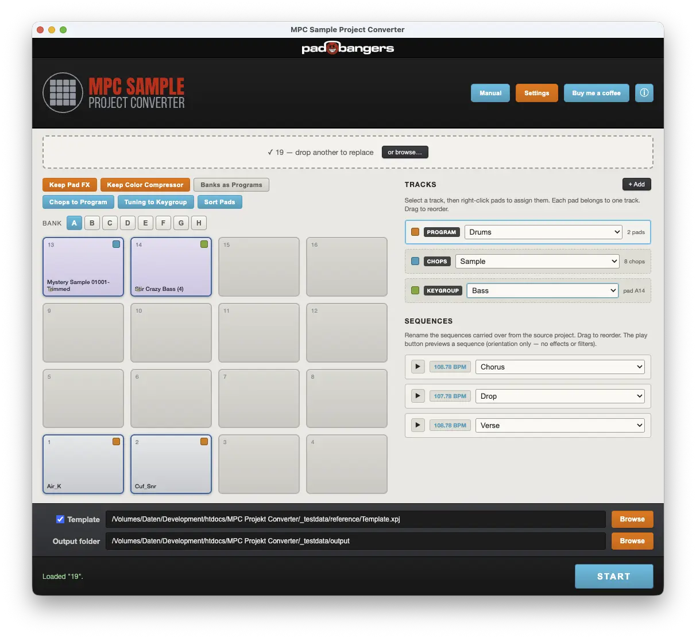
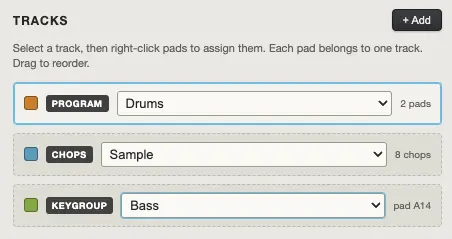
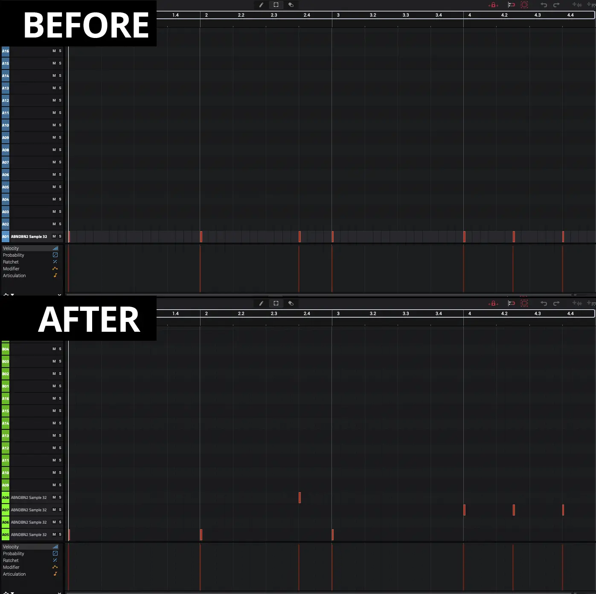
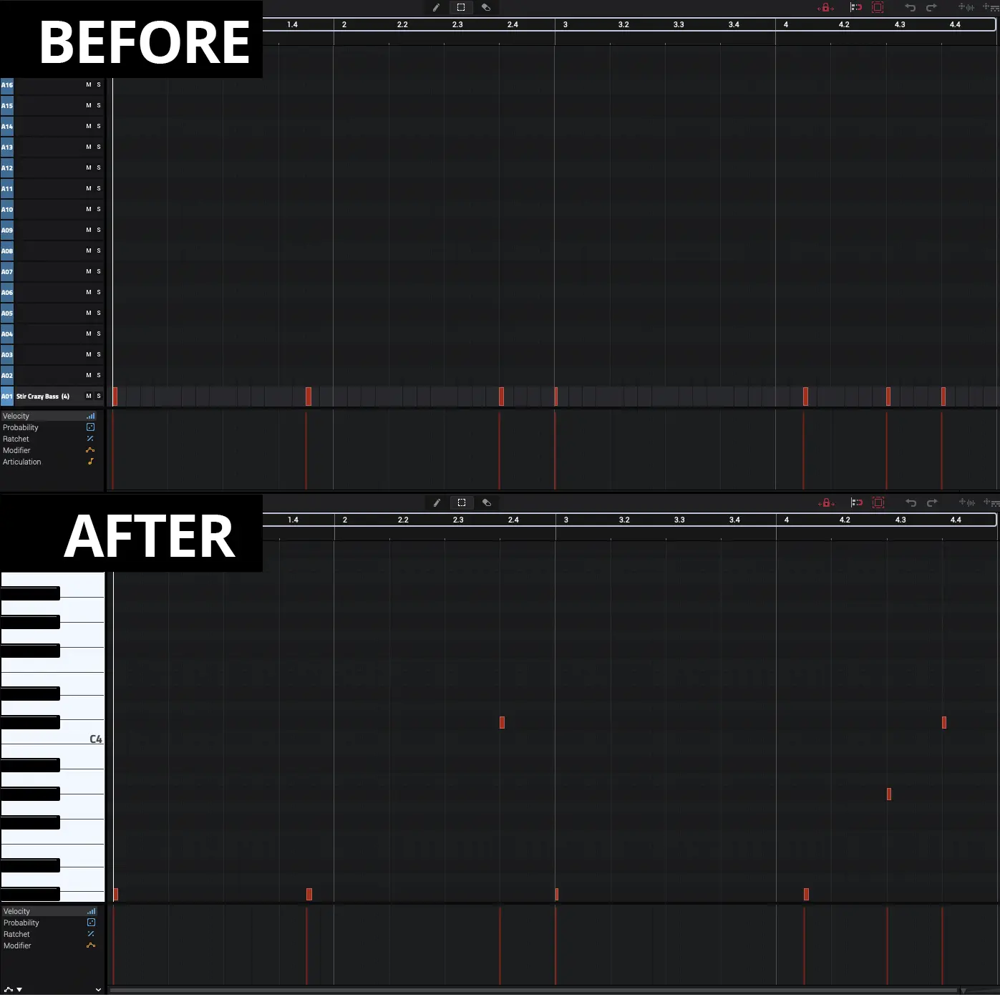
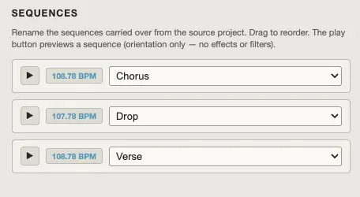
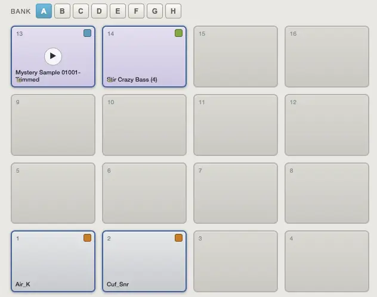
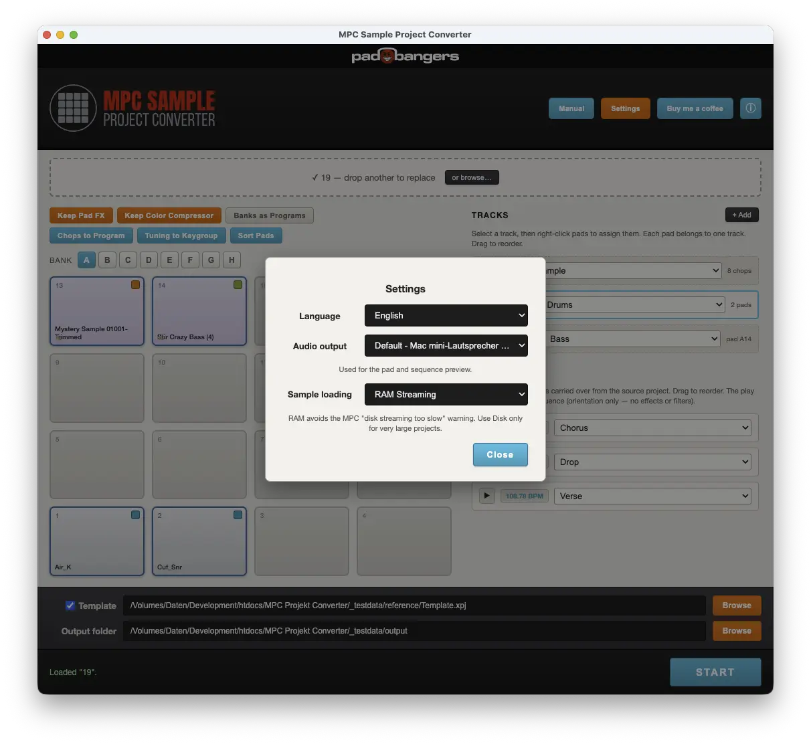

For the big standalone MPCs — MPC One, MPC Live and MPC X/XL. When they import an MPC Sample project, everything ends up crammed into a single track — hard to read and hard to edit. This app splits it into clean tracks and turns your chops and "16 Levels" tuning melodies into real, playable programs: chops become a chop program, tuning melodies become keygroups — plus an in-app preview and an optional template for your own mixer setup.
Standalone desktop app · macOS & Windows · Portable, no installation hassle.

Split pads into tracks (each holds a drum program) and name them from a preset list (Drums, Bass, Chops, Guitar, Loop, One Shots…) or your own. Drag rows to reorder — the order is kept in the export.

MPC Sample chops live inside the sample, and the standalone MPC can't take them over directly. The converter detects a chopped sample automatically and turns it into its own drum program — one chop per pad, starting at A1. Your performance is rebuilt as real MIDI notes: each hit lands at its original time on the pad of the chop it actually triggered, with the original length and velocity, and the chops choke each other just like the mono source pad. Pitch, filter, envelopes and warp settings come along.

A sample played as a melody via "16 Levels" Tuning becomes a real keygroup program. The melody is converted to real, in-tune MIDI notes — the pitch per note is read from the tuning data and placed relative to the sample's root note, so it plays chromatically in tune. Filter, envelopes, note on/off behaviour and warp settings are carried over too.

Every sequence is carried over, along with the Song Mode playlist. Rename each one from musical presets (Intro, Verse, Chorus, Bridge…) or your own labels, and drag the rows to reorder them.

Audition any pad, or press play next to a sequence to hear the whole thing loop — with the right timing, pitch (tuning), chops and pad mono/choke, so you can tell sequences apart before naming them. It's a quick orientation aid; effects and filters aren't reproduced. Pick the audio output device in Settings.

If you already sort your sounds by banks, one click turns each used pad bank into its own program. Sort Pads lays every program's samples out from A1 with no gaps (notes remapped to match), so programs stay tidy. You can choose to carry the source's effects over or ignore them.
Choose the interface language, the audio output device used for the pad and sequence preview, and the sample loading mode — RAM by default (which avoids the MPC "disk streaming too slow" warning), or Disk for very large projects.

Want your converted beats inside your own setup? Tick Template and pick your MPC template once — its mixer, submixes, sends, master FX and track layout are kept 1:1. Skip it and a clean default project is used instead.
Free for personal use. Portable — no installation or extra runtime required.
The app may take a few seconds to open the first time. On Windows, allow it through SmartScreen ("More info → Run anyway").